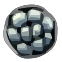

Gostou da curiosidade?
O Ferrão é a principal arma do Cavaleiro em Hollow Knight. você ja inicia o jogo com ela e ela pode ser usada tanto para atacar quanto para dar os parrys para anular o ataque inimigo e fazer o personagem se locomover Ele é usado para atacar inimigos e pode ser aprimorado várias vezes ao longo do jogo para aumentar seu dano
ferrões que podem ser obtidos
| Ferrão | Descrição | custo |
|---|---|---|
| Ferrão velho |
Uma arma tradicional de Hallownest. Sua lâmina está cega devido ao tempo e ao desgaste. ======================= arma tradicional e primaria do jogo |
sem custo de  |
| Ferrão Afiado |
Uma arma tradicional de Hallownest. restaurada a sua forma mais letal. ======================= segunda forma da arma tradicional do jogo |
250 |
| Ferrão canalisado |
Uma lâmina primorosamente balanceada. ======================= terceira forma da arma tradicional do jogo |
800 e 1 Minerios Palidos |
| Ferrão Serpenteado |
Uma arma poderosa de Hallownest, refinada além de todas as outras. ======================= quarta forma da arma tradicional do jogo |
2000 e 2 Minerios Palidos |
| Ferrão Serpenteado |
A arma definitiva de Hallownest. Trabalhada com perfeição, esse ferrão antigo revela sua verdadeira forma. ======================= quinta forma da arma tradicional do jogo |
4000 e 3 Minerios Palidos |
Voc√™ sabia que o personagem principal de Hollow Knight foi retirado de um projeto anterior da Team Cherry chamado Hungry Knight, que foi realizado em menos de 48 horas em um encontro de desenvolvedores? Isso √© um exemplo interessante de como as ideias podem evoluir e se transformar ao longo do tempo! üòä
No desenvolvimento de Hollow Knight, as inspirações da Team Cherry foram jogos como zelda II,Super metroid e Castlevania: Aria of Sorrow, e você tambem sabia que O modelo de movimento em Hollow Knight veio das séries Mega Man e Mega Man X.
em primeiro 1°lugar skate king com 31m 24s de LRT(load removed time)
video no qual ele alcançou 1°lugar
Caso queira ver diretamente no Youtubeclique aqui
já em 2°lugar temos lep com 31m 39s de LRT
video no qual ele alcançou 2°lugar
e por ultimo mas não menos importante temos jackmanmarcus com 31m 46s de LRT
video no qual ele alcançou 3°lugar
Caso queira ver diretamente no Youtubeclique aqui